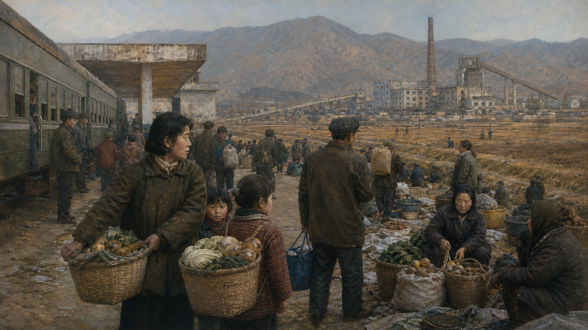

关键地点关系
清晨六点，扩音器的音乐越过一排灰色住宅楼。一个中学生扣好校服，母亲把昨晚留下的饭重新蒸热，父亲已经去单位参加早班。若这家人住在平壤，他们可能乘地铁、在节日经过灯光明亮的新街区；若住在北部乡村，停电、交通和粮食供应会是另一种日常。我们不知道这个虚构家庭的姓名，也不该假装能透过封闭边境看清每个厨房。但正因为资料有限，更要把已知事实、逃离者证词、政府宣传和外部推测分开。

从废墟出发，发展首先意味着生存
1953年停战时，朝鲜北部的城市、铁路、工厂和水利设施遭到严重破坏。国家面对的不只是“怎样增长”，而是怎样让一个被轰炸过的社会重新通电、开工、上学。苏联、中国和东欧社会主义国家提供设备、贷款、技术人员与建筑援助，朝鲜政府则用计划体系集中调动资源。重工业、机械、化工和国防被放在优先位置，因为领导层相信，工业能力既代表现代化，也决定下一场战争能否生存。
这条道路并非一开始就显得失败。殖民时期半岛北部本来就集中了较多矿业、水电和重工业；战后恢复又得到社会主义阵营支持。1950至1960年代，朝鲜在若干工业指标和城市基础服务上并不落后于南方。免费教育、基本医疗、妇女进入劳动领域与扫盲，都为国家赢得真实支持。若从后来的饥荒倒推，认定所有早期成就都是宣传，就无法解释许多人为什么曾相信这个制度。
但恢复模式也埋下脆弱性。国家偏爱容易计算的钢、煤、电和机器数量，消费品、农业弹性与企业自主空间较小；政治动员常要求提前完成高指标，下级则有动机报告好消息。工业体系还依赖盟友以优惠条件供应石油和零部件。看上去“自力更生”的工厂，实际上嵌在社会主义国际分工中。自主是一种政治目标，不等于经济上真的没有依赖。
宣传画能不能当史料？
能，但它首先证明国家希望人民看见什么，例如工人、粮食丰收和领袖关怀；它不能单独证明现实产量。把宣传画与统计、外交档案、卫星资料和个人证词对照，才可能接近实际。
为什么安全成为国家的中心
朝鲜领导层理解世界的起点，是殖民统治、半岛战争和持续军事对峙。美国军队驻扎韩国，南北没有和平条约，韩国与美国举行联合演训；从平壤视角看，这些都是政权可能遭攻击的证据。韩国、美国和日本则看到朝鲜的常规军队、渗透行动、导弹与核武器，认为必须加强同盟防御。双方各自说自己在防守，却从对方能力而非对方自述判断危险。
这种外部压力与内部政治结合，形成“安全国家”：军队不仅守边境，还进入经济、教育、劳动动员和身份荣誉。领袖被塑造成国家团结与独立的保证，政治异议则容易被解释成敌人渗透。金日成通过清除不同派系，把党、军和国家权力集中起来；金正日时期强调“先军政治”；金正恩时期则在核力量、经济建设与党的控制之间重新调整表述。口号变化，安全优先的结构延续。
安全优先能解释大量资源为何流向国防，却不能替侵犯权利辩护。联合国调查委员会根据公开听证、证词与资料，认定朝鲜存在系统性、广泛和严重的人权侵犯，其中一些可能构成危害人类罪。朝鲜政府拒绝这类结论，称其出于敌对政治目的。严肃读者既要说明朝方立场，也要考察调查方法、证词相互印证与政府拒绝开放核查所造成的资料限制。
国家安全还有一个日常面向：居民的学习、工作、居住和旅行被单位系统组织，社会关系可被纳入政治评价。一个人获得大学名额、理想岗位或平壤居住资格，不只取决于考试和技能，也可能受到家庭背景、政治可靠性与组织表现影响。外界常用“成分”概括这套分类，但具体执行会随时期和地区变化，不能把每个人的人生写成一张永不改变的等级表。
单位、学校与配给：国家怎样进入一天
在经典计划体制中，成年人大多属于工厂、农场、机关或社会组织。单位发工资，也连接住房、医疗、粮食和政治学习。孩子进入国家教育体系，课程除了数学、科学与语言，还讲革命历史和领袖故事。这样的组织可以提供广泛的基础服务，也让个人离开正式体系的空间很小。当供应稳定时，它像一张覆盖生活的网；当供应断裂时，人们会发现网的每一个结都连在同一个中心。
城乡差异与首都优势十分重要。平壤是政治展示窗口，居住资格受到管理，基础设施和供应通常优于许多地方。矿区、工业城、边境城镇和合作农场则各有条件。谈“朝鲜人的生活”就像用一户人家概括整个中国，极易失真。卫星夜光可以提示供电差距，却看不见谁家有太阳能板；营养调查可以发现总体风险，却不能替每个家庭写菜单。
医疗和教育名义上免费，朝鲜也曾建立覆盖广泛的基层体系。然而“免费”只说明收费规则，不保证药品、设备、电力和教师资源充足。经济困难时期，患者可能依靠亲友、市场购买或非正式回报获得所需物资。制度的纸面承诺与实际能力之间，正是理解普通生活最关键的缝隙。
组织生活还提供归属感。一起劳动、排练节庆、参加邻里组织，并不都能简单翻译成“被迫”或“真心”。人在任何制度中都可能一边遵从、一边相信、一边抱怨，也会利用规则照顾家人。若把朝鲜居民写成没有思想的群众，就重复了国家宣传最喜欢的整齐队列，只是把赞美换成嘲笑。
父子暂停一下：免费服务等于好服务吗？
比较“有没有权利”“有没有资源”“能否公平获得”三个问题。学校、医院和粮食制度可能在哪一项做得较好、在哪一项较弱？我们评价一个制度时，为什么不能只看法律承诺，也不能只听一个人的遭遇？
当苏联消失，配给体系断裂
1991年苏联解体，朝鲜失去重要贸易伙伴、优惠能源和结算方式。工厂缺油、缺零件，化肥生产与运输受阻；农业本就受山地多、耕地少和高度投入模式限制。随后洪水、干旱等灾害打击收成。更深层的问题是国家缺少外汇、政策反应迟缓、信息封闭，仍优先维持关键政治与军事部门。多个因素叠加，1990年代中后期出现大规模饥荒，朝鲜官方称之为“苦难的行军”。
配给停止或大幅缩水后，家庭不得不自己寻找食物。有人到山坡种玉米，有人拆机器换粮，有人越境到中国，也有人开始在非正式市场交换家用品。女性常成为小生意主，因为许多男性仍被正式单位束缚。市场不是政府坐在会议室里设计的改革，而是人们为了活下去从制度裂缝中长出的秩序。
国际援助机构进入朝鲜，提供粮食与营养支持，却面临进入地区、选择受益者和监督分配的限制。援助者担心物资被转用，朝鲜政府担心外部人员搜集信息或削弱控制。人道工作因此处在艰难伦理中：若监督不完美就撤离，最脆弱者可能先失去食物；若完全接受限制，又可能无法保证援助抵达真正需要的人。
饥荒改变了国家与居民之间的默契。国家曾承诺通过单位和配给保障生活，危机后，人们学会依靠家庭网络、市场和跨境信息。这个变化没有自动带来政治开放，却让经济生活再也难以完全回到旧计划轨道。市场既扩大个人生存空间，也带来贫富差距、贿赂和执法不确定性。
市场长出来以后，国家学会收、放与再控制
进入二十一世纪，许多集市被正式化为综合市场，摊位缴费，商品种类扩大。私人或半私人的运输、餐饮、服装加工和小型生产发展起来。名义上的国营单位有时由个人提供资金和原料，再借单位名义经营。外界把这类有资本和关系的经营者称为“钱主”。他们不是拥有稳定产权的现代企业家，而是在行政许可、关系网络与政策风险之间做生意。
2009年的货币改革试图更换货币并限制旧币兑换，被普遍认为严重打击私人储蓄和市场信心，之后部分措施收回。这一事件说明国家面临矛盾：市场让社会获得食物、也产生税费和商品，却削弱计划分配对人的控制；压得太紧会伤害供应与稳定，放得太开又可能形成不受国家支配的财富和信息。
金正恩执政后，平壤出现新住宅、游乐设施与消费空间，一些企业和农场获得更灵活的生产激励。手机网络扩大，但普通用户连接的是受控制的国内网络，跨境通信与未经许可的外国媒体仍受严厉限制。现代建筑、电子支付和严格信息边界可以同时存在。发展不是一条从“传统”直达“开放”的单行道。
市场还重新安排家庭权力。会做买卖、能寻找货源的人可能成为主要收入者；年轻人通过服装、用语和存储设备接触外部文化；官员则可能通过许可与检查收取利益。国家并未消失，而是从唯一分配者变成监管者、参与者和不确定风险来源。普通人学会判断今天哪些规则严格执行、哪些可以协商，这种技能本身也是一种生活资本。
核武器是护盾，也是沉重账单
朝鲜核计划有技术、安全与政治多重来源。领导层看到苏联解体、伊拉克战争和利比亚政权垮台，得出一个结论：没有可信威慑，小国可能被更强国家推翻。核武器还能提升国内合法性和谈判筹码。2006年朝鲜进行首次核试验，此后继续发展核装置与不同射程导弹，并在法律和国家叙事中强化核地位。
国际社会通过联合国安理会制裁限制朝鲜武器、金融、煤炭、燃料和其他贸易。制裁不是造成所有经济问题的唯一原因：计划体制缺陷、政策选择、边境管控和自然条件同样重要；但制裁会提高交易、运输和金融成本，也可能产生超出文字条款的人道影响。银行与公司为避免违规，常选择完全不做与朝鲜有关的业务，这被称为“过度合规”。
联合国制裁设有人道豁免，允许经批准的医疗、供水、农业和营养物资进入。这说明国际规则试图区分政权压力与民众需要，但申请、采购、运输和银行结算仍可能耗时。讨论制裁时，不能只问“有没有惩罚领导层”，还要问“成本由谁承担”“是否改变了目标行为”“有没有更精确的替代办法”。
朝鲜政府的主张
核力量是面对美国敌视与军事威胁的自卫手段，只有安全得到保障，国家才能自主发展。
反对者的判断
核与导弹计划违反相关安理会决议，威胁邻国并挤占民生资源；以核武强化安全还会刺激地区军备竞争。
两种说法不必被平均对待，却都需要放进因果链。仅说“朝鲜好战”解释不了它的安全逻辑；仅说“被迫自卫”又会抹去领导层的主动选择和核扩散风险。理解最有价值的地方，恰恰是让我们看见何种安排可能改变其成本与恐惧。
疫情把边境关上，也把脆弱性放大
2020年新冠疫情出现后，朝鲜采取极严边境措施。对医疗能力有限的国家而言，防止病毒输入有公共卫生理由；但边境关闭也切断大量合法贸易、非正式小额交易和援助人员通道。市场商品变少、价格波动，依靠跨境收入的家庭承受压力。安全逻辑再次显示两面：它试图挡住一种危险，也阻断维持生活的流动。
国际机构在朝工作人员大幅减少，独立观察更困难。于是同一张卫星图、同一条价格信息可能被解读成“即将饥荒”或“情况稳定”。FAO、WFP等机构会综合作物状况、降雨、贸易和既往营养调查评估风险，但无法进入就意味着置信度下降。资料空白不是可以随意填充的邀请，而应在文章中明确标出。
边境后来逐步恢复部分流动，货运和外交接触有所变化。然而截至2026年8月，朝鲜社会的可靠、可比、及时统计仍十分有限。联合国人权机构2025年发布的十年回顾称，控制与惩罚体系仍然严厉；朝鲜政府持续拒绝相关指控。我们能确认制度性限制存在，却不应把每一则匿名消息都当成全国事实。
不要把两千多万人写成一个表情
外部媒体喜欢奇观：整齐阅兵、巨大雕像、夸张传闻、领导人表情。奇观很容易点击，却把居民挤出画面。一个朝鲜人可能是护士、矿工、程序员、摊贩、农民、军人或祖母；他可能相信国家某些叙事，也可能私下怀疑；可能受益于首都建设，也可能长期营养不足。人的复杂性不会因为制度封闭而消失。
逃离朝鲜的人提供不可替代的信息，但他们的经历受离开年代、家乡、阶层、性别和路线影响。1990年代饥荒中的边境居民，与近年从精英家庭离开者，看见的不是同一个国家。采访者的提问、韩国社会的政治竞争和媒体奖励“惊人故事”的机制，也可能影响叙述。最尊重证词的方式，不是毫无疑问地转发，而是认真核实并保留语境。
抵达韩国也不是故事的幸福句号。语言口音、学历承认、就业、创伤、家庭失联和社会偏见都可能持续。有人适应并建立新生活，有人感到孤立。把他们只当作揭露朝鲜的工具，会再次夺走个人主体性。人的价值不取决于其证词能否证明某一阵营正确。
父子暂停一下：我们为什么爱看“神秘国家”？
找一则关于朝鲜的标题，看看它是否提供日期、地点、消息来源和核实方式。若删掉“震惊”“离奇”“神秘”等词，还剩多少信息？对一个封闭社会保持批判，为什么更需要克制而不是夸张？
发展不只是高楼、导弹或一张粮票
朝鲜的发展道路把一个根本问题推到我们面前：发展究竟为了什么？若只看重工业和军事技术，朝鲜展示了贫穷国家也能集中力量完成复杂工程；若看营养、选择、信息、免于恐惧和稳定生活，集中资源的代价又极为明显。国家生存当然重要，但“国家安全”若永远不能转化为人的安全，就会变成无法结账的承诺。
外部压力真实存在，内部选择也真实存在。制裁与军事对峙会压缩发展空间，领导层仍决定资源优先级、市场边界与信息控制。把所有困难归于制裁，是政府叙事；把所有困难归于某个领袖性格，则忽略战争结构、制度路径和国际环境。历史解释需要同时容纳结构与责任。
未来并非只有“突然崩溃”或“永远不变”两种剧本。制度可能在控制中调整，市场可能时进时退，外交可能从危机走向谈判再退回危机。最稳妥的观察方法，是少做戏剧性预言，多看粮食与能源流动、政策执行、边境信息、国际核查和普通人的实际选择。
理解朝鲜，不是替它辩护，也不是把它变成笑话。真正困难的任务，是在资料有限时仍然尊重事实，在批判制度时仍然看见人。
夜谈留下的六个问题
- 国家面对真实外部威胁时，安全支出应由什么原则限制？
- 朝鲜早期工业成就与后来经济危机，为什么可以同时属于同一条发展道路？
- 市场给普通人更多生存空间时，也会产生哪些新的不平等和风险？
- 国际制裁若伤及普通人，是否仍可能是正当工具？应如何评估和改进？
- 资料极少时，我们怎样在“不轻信”与“不把一切都说成未知”之间保持判断？
- 衡量一个国家的发展，你最看重收入、寿命、教育、选择、安全还是尊严？为什么？
资料来源与继续阅读
- 联合国人权高专办：朝鲜人权调查委员会报告与问答。
- 联合国人权高专办：2014—2025年朝鲜人权状况十年回顾。
- FAO/WFP：2019年朝鲜粮食安全快速评估，注意这是特定年份调查，不可直接当作2026年现况。
- 联合国安理会1718委员会：对朝制裁决议与措施。
- 联合国安理会：对朝人道豁免申请与批准记录。
- 国际原子能机构：朝鲜核问题专题与核查历史。
- 世界银行：朝鲜公开发展指标，大量空缺本身说明数据限制。
- 世界卫生组织：朝鲜国家卫生资料页。
- 联合国 Peacemaker：1991年南北基本协议全文。
- 联合国安理会：历年专家小组报告档案。